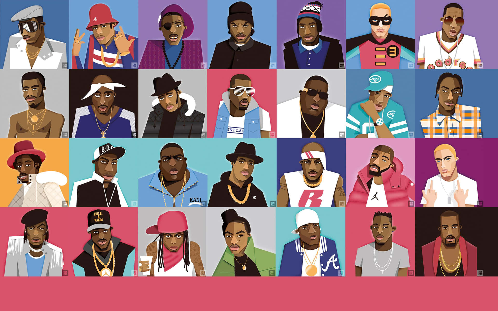

WELCOME
TO MY
MUSIC
GALLERY


1. Mirror
"Mirror" by Lil Wayne featuring Bruno Mars is a
reflective track from Tha Carter IV. It explores
themes of self-awareness and regret, with Lil Wayne
revealing a more emotional side.
The "mirror" symbolizes facing one's true self.
Listen

2. Street Prayer
"Street Prayer" by Lil Durk is a heartfelt song
about the struggles of street life. He reflects
on pain, loss, and survival, offering a raw look
into his past. The track is emotional and introspective,
like a prayer for himself and those he's lost.
Listen

3. Relationship
Young Thug "Relationship"
This song talks about the ups and downs of love and trust.
Young Thug shares his feelings about complicated relationships
and the struggle to keep them real.
Listen

4. PA NO PENSAR
Peso Pluma "Pa No Pensar"
A smooth track where Peso Pluma
sings about trying to forget heartbreak and
pain by staying distracted, avoiding overthinking,
and living in the moment.
Listen
5. Sorry, Blame It On Me
Akon "Sorry, Blame It On Me"
A heartfelt apology song where Akon takes responsibility
for mistakes in a relationship, showing vulnerability and regret.
It's about owning up and wanting to make things right.
Listen

6. Just Can't Get Enough
"Just Can't Get Enough" by Black Eyed Peas is a catchy,
upbeat song about being hooked on someone and craving their love nonstop.
It's all about that irresistible attraction and wanting more every time.
Listen
"I like music because it speaks to me in a way that words alone never could. Whether I'm feeling happy, sad, motivated, or lost, there's always a song that matches my mood perfectly. Music helps me express emotions I sometimes can't explain, and it brings a sense of peace and connection to the world around me. It inspires me, motivates me, and often brings back memories that mean a lot. No matter what I'm going through music is always there it's like a loyal friend that never leaves my side."